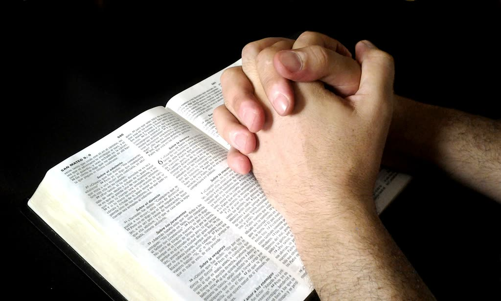

Plan a visit
Where we are, where the children go, and what a Sunday morning looks like.
We are a church family committed to knowing Christ, growing together in His Word, and sharing the hope of the gospel with our community and beyond. At East Side, we believe the church is more than a place we gather—it is a family of believers walking through life together, encouraging one another, serving one another, and seeking to faithfully follow Jesus.
Whether you have followed Christ for many years, are searching for answers, or are simply looking for a church to call home, there is a place for you here. Our desire is that every person who walks through our doors feels welcomed, hears the truth of God’s Word, and has the opportunity to grow in a meaningful relationship with Christ and with others.
For more than sixty years, East Side has been part of the Muldrow community, and our mission remains simple: to impact our world for Christ.
We would love for you and your family to join us as we worship, grow, serve, and follow Christ together.
613 E Sequoyah St · Muldrow, OK 74948 · (918) 427-5116
613 E Sequoyah St
Muldrow, OK 74948
We are a block east of the main road through town, in Sequoyah County. If you are coming for the first time, park anywhere along the front and come in by the main doors.
Map data © Google. Open in Google Maps
Where we are, where the children go, and what a Sunday morning looks like.
Services, youth, and upcoming events — kept in step with our own church calendar.
Missed a Sunday, or want to hear a message again? Services are streamed on our Facebook page.
What we hold to be true, in plain language — and where we stand as Free Will Baptists.

What holds this congregation together is a confidence that the Bible is God’s Word and that the gospel is worth giving your life to.
Much of what we do happens quietly: hospital visits, nursing home services, meals carried to a house where someone is grieving, and phone calls to folks who cannot get out any more. If you need prayer, or someone to sit with you, please tell us.
In October 2025 the church broke ground on a 14,000 square foot worship and ministry center at 1302 South Main Street, expected to open in December 2026. We will keep this page updated as the work progresses.
For God so loved the world, that he gave his only begotten Son, that whosoever believeth in him should not perish, but have everlasting life. — John 3:16